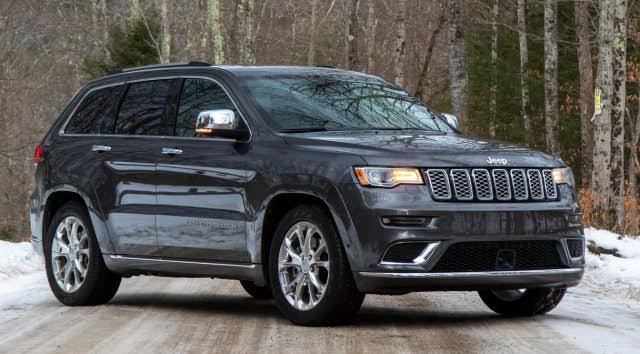
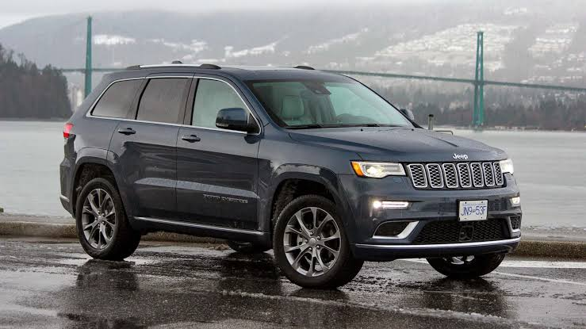

The second-generation Compass debuted in September 2016 in Brazil and at the Los Angeles International Auto Show in November 2016, sharing a modified platform with the Renegade. It is positioned between the smaller Renegade and the larger Cherokee globally or the Commander in South America. A compact crossover SUV[3][4] introduced for the 2007 model year,[5] and is now in its second generation. The first generation Compass and Patriot, its rebadged variant, were among Jeep's first crossover SUVs
Manufacturer:JEEP
 